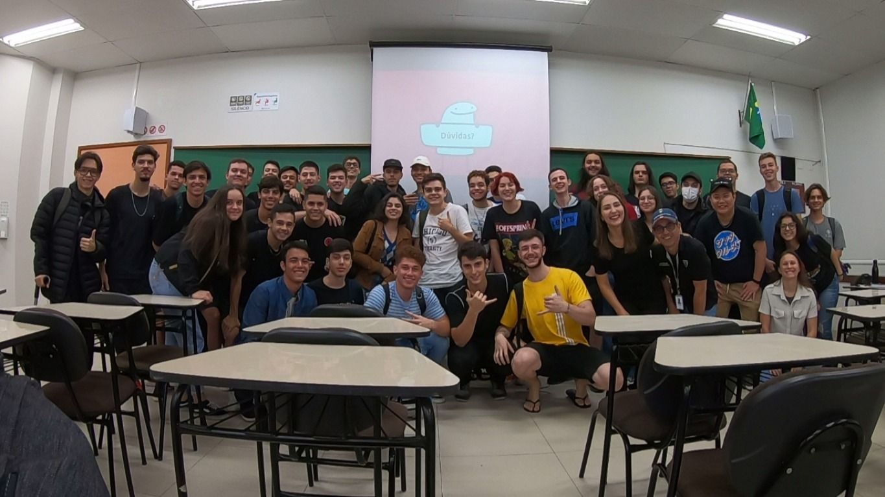
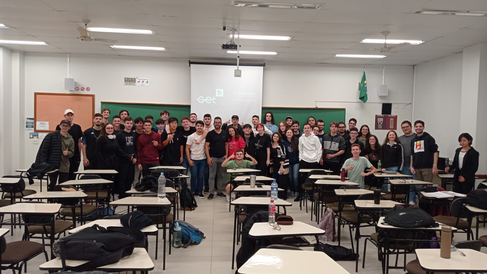

02 de maio de 2023
Bate papo com a Tester Sênior Narayane Luvizutto

Em um dia memorável, tive a incrível oportunidade de participar de um bate-papo com a renomada Tester Sênior Narayane Luvizutto, que desempenha um papel fundamental na empresa DB1. Foi uma experiência enriquecedora, na qual pude mergulhar na sua história e absorver seu vasto conhecimento e experiência.
Durante nosso encontro, Narayane compartilhou insights valiosos sobre sua trajetória profissional, revelando os desafios enfrentados e as conquistas alcançadas ao longo de sua carreira. Sua paixão pela área de teste de software era evidente em cada palavra, e sua dedicação em aprimorar continuamente suas habilidades serviu de inspiração para todos nós presentes.
Gostaria de expressar minha sincera gratidão ao Professor Moreno por tornar possível esse encontro. Sua dedicação e esforços em trazer profissionais inspiradores, como Narayane Luvizutto, para compartilhar suas experiências e conhecimentos têm um impacto significativo em nossa jornada de aprendizado.
16 de maio de 2023
Bate-papo com o Gerente de Infraestrutura Frank Aguilieri

Tive a incrível oportunidade de participar de uma cativante palestra com o experiente líder de infraestrutura, Frank Aguilieri, que desempenha um papel essencial na empresa GetCard, uma organização renomada que trabalha em parceria com gigantes da indústria, como YouTube, Google e Netflix. Durante esse encontro enriquecedor, pude receber um rico universo de conhecimento sobre infraestrutura e gerenciamento de projetos.
Frank compartilhou abertamente sua trajetória profissional, compartilhando os desafios e conquistas que moldaram sua carreira.Essa conexão com organizações líderes da indústria acrescentou uma dimensão fascinante à sua palestra e proporcionou insights valiosos sobre os desafios e demandas enfrentados em um ambiente de alto desempenho.
Gostaria de expressar minha sincera gratidão ao Professor Moreno por tornar possível esse encontro. Sua dedicação e esforços em trazer profissionais inspiradores, como Frank Aguilieri, para compartilhar suas experiências e conhecimentos têm um impacto significativo em nossa jornada de aprendizado.